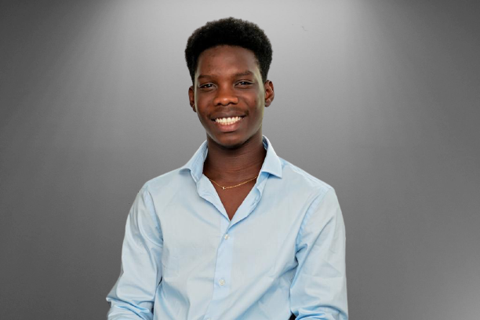

About Me
Computer Programming and Analysis Student

I'm Ellis Sowah, the CEO of EllisLads and a computer programming and analysis at seneca College. I'm from Toronto Canada, born and raised in Africa (Ghana).
I started learning computer peograming on my own aged 8 and grew not to only like it but loved it. I did mostly of my learnings from watching youtube videos and from my big sis who is a full time programmer.
My first programming language was C programming and then after i started learning other programming languages like Html, css, javascript, c++, python and java. I did other computer courses like web development,
data entry etc....
My favorite things to do on my free times are to play video games, do a little computer work and mostly sleep. I play basketball and soccer almost everyday at the seneca gym especially basketball because its my favorite and best sport followed by soccer.